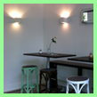
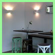

Das Eiscafé in Düsseldorf
In unserem Eisladen erwarten Sie kreative und klassische Eis- und Dessertvariationen die wir mit frischen und hochwertigen Zutaten selbst zubereiten. Daneben servieren wir Espresso und Kaffee in bester Bioqualität aus einer Würzburger Privatrösterei.
Wir interpretieren Eiscreme immer wieder neu und überraschen Sie mit selbst kreierten Köstlichkeiten. In unserem stilsicheren Ambiente aus Eis und Licht freuen wir uns Ihren Gaumen verwöhnen zu dürfen.
All unsere Produkte stellen wir Ihnen auch gerne für eigene Veranstaltungen bereit.
Anne Meißner & Michael Hofmann
Wann ist die EisBar geöffnet?
| Montag - Freitag | 09:00 Uhr - 19:00 Uhr |
| Samstag & Sonntag | 10:00 Uhr - 19:00 Uhr |
Mit der EisBar in Kontakt treten:
 0151/24291018
0151/24291018
 mail [at] eisbar-duesseldorf.de
mail [at] eisbar-duesseldorf.de
Wo ist die EisBar?
Moltkestraße 97
40479 Düsseldorf
 
